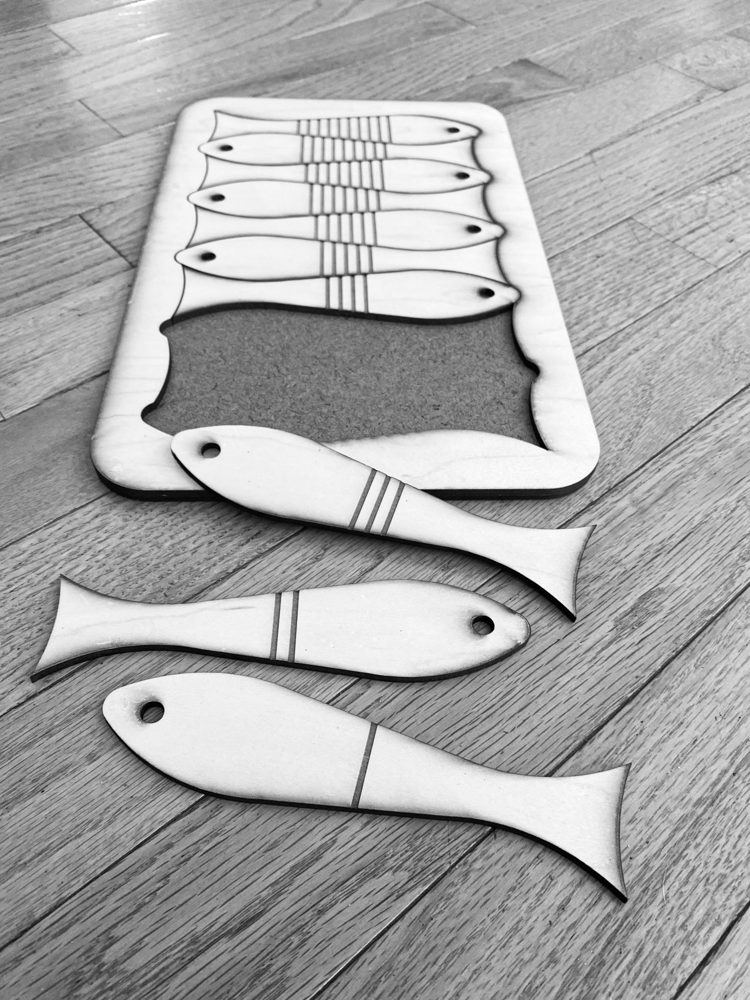
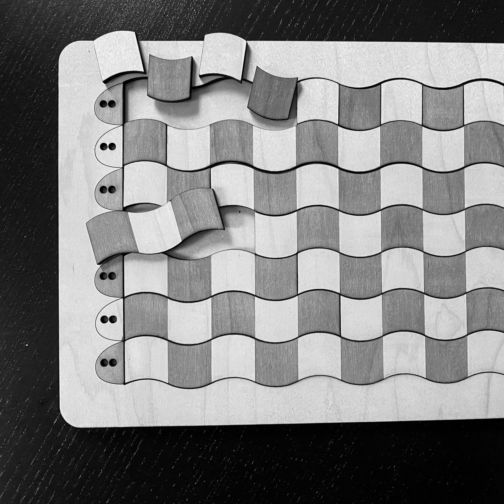
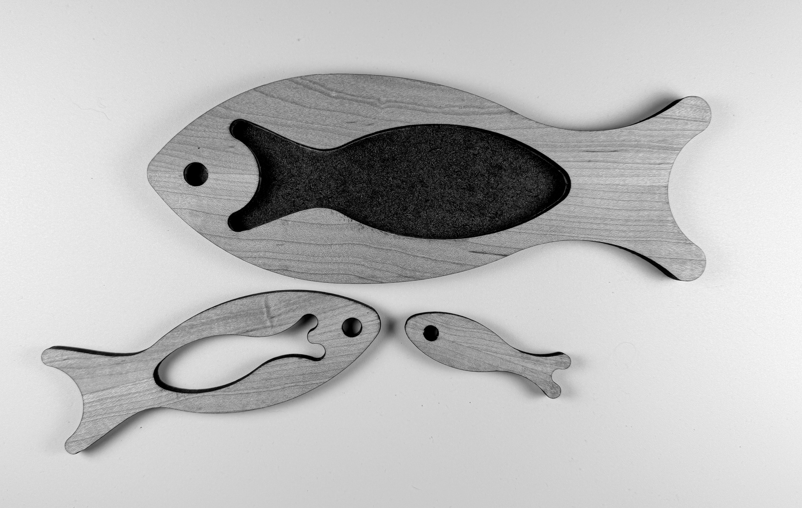
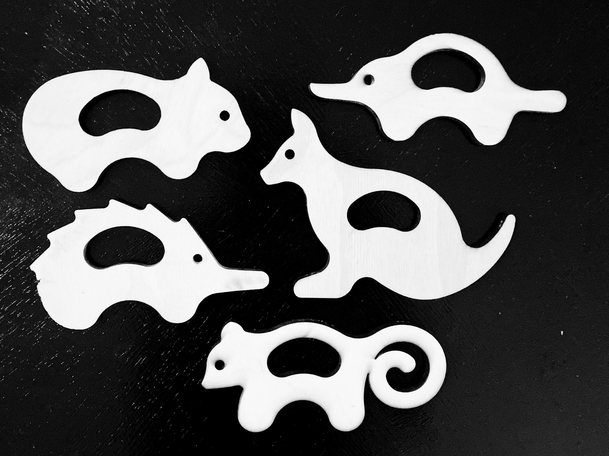
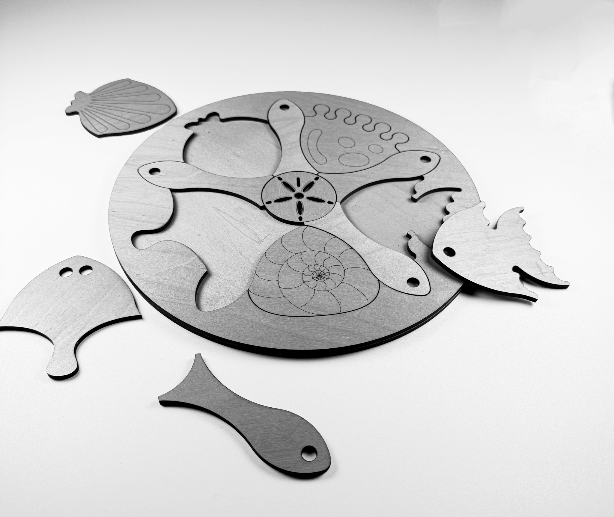
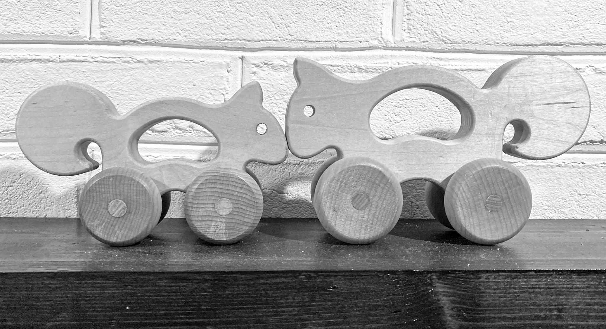

welcome to oioitoi
oioitoi wants every child to have the foundational skills they need to thrive and succeed at school. Known as the 'readiness gap', approximately 40% to 70% of children in the US arrive at kindergarden without the necessary skills they need to make a successful start.
A persistent opportunity gap is evident with children from underserved communities who are less likely to be school-ready. The effects of the pandemic on children's abilities are still being felt.
our mission
oioitoi's mission is to enrich early childhood learning through thoughtfully designed toys that meet children where they are.
We encourage learning through the joy of spontaneous and cooperative play and help children develop the essential skills they need for school success: literacy, numeracy, communication, fine and gross motor ability, and social/emotional readiness
We know parents, caregivers and educators sometimes don't have the time, imagination, or energy for play, so we provide help with resources, and ideas for guided play.
the toys
Our toys are created with love by people who enjoy seeing children actively involved in play. We receive advice from specialists in the fields of education, literacy, dyslexia, speech therapy, and toy design to ensure our toys meet their educational aims.

Visual interpretation of quantity before number characters

Base-10 number system for early math and estimation skills

An easy initial puzzle with a coffee-table or display aesthetic

kits of themed animals to accompany reading, skills acquisition

A more challenging puzzle where sea creatures rule!

A pair of animal push toys from a range of less-often seen animal toys
about
oioitoi was founded by Anne, an industrial designer and educator with the support of her sister Jenni, a speech language therapist and educator. Both are parents and have experience living, working and raising children across several continents.
A growing reliance on screen time and devices, is having a negative impact on attention spans, language building, imaginative play, social skills and communication. Considering a future in which children can not meet their full potential, prompted the sisters to do something about it!
contact us
Have questions or want to learn more? Feel free to reach out to us at oioitoiquery@gmail.com.